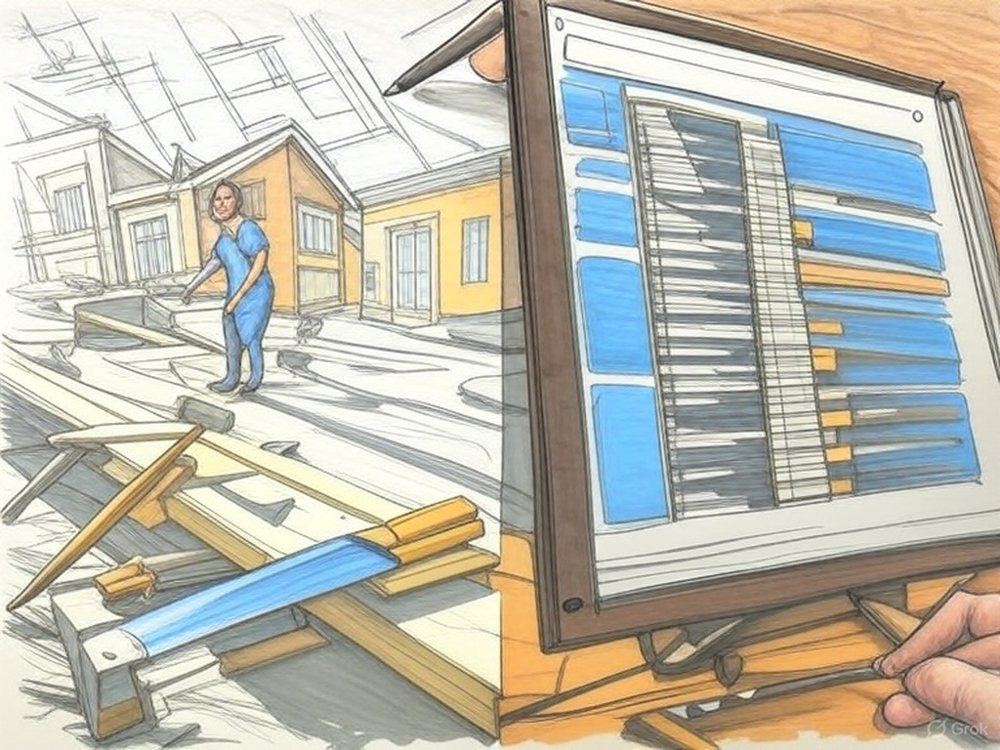

How to Build Your Own Website with Grok: The First Step
1. Basic Understanding of Website Building
Building a website with Grok3 is like constructing a house, but you’re hiring a “contractor” to do all the work for you. Even if someone else is building everything for you, you should still have a basic understanding of the fundamentals.
Website development is a bit more complex. Grok3 will act as your “assistant,” helping you write the code, but you’ll still need to copy and place that code in the correct location yourself, as well as perform the necessary setups to ensure the website runs smoothly.
Grok3 will guide you through every step of the process, but you’ll be the one directly carrying out those steps.
You don’t need to be an expert, but you should at least familiarize yourself with some basic concepts. Spend a few hours “chatting” with Grok3 to get acquainted with the principles of website building, learn about the required software or tools, then download and set them up in advance so you’re ready to start.
I started from scratch myself—I knew a little about Python (thanks to Grok’s teaching), but I had no knowledge of website building. However, with Grok3’s guidance, everything became much easier.
2. Planning Your Website
As mentioned, you’ll need to download and prepare the basic tools needed for website development. Ask another Grok3 for detailed guidance on all the tools (essential for your website) and the steps required to install them.
How far do you plan to develop your website? For me, I currently only need a “static” website—nothing too complex, just enough to post articles with accompanying images. If you want to build a website with more features, make sure to “chat” thoroughly with Grok3 to prepare everything carefully.
Before working with Grok3, you should have a clear vision of your website’s design. What do you want it to look like? What colors will it use? Where will the logo be placed? What will the homepage include? How many subpages will there be? Just like building a house, even with a “contractor” helping, you still need to provide a blueprint or detailed description of specifics like the electrical system, plumbing, or interior design.
I recommend sketching out your website ideas, either by hand or using design tools like Photoshop, and listing the features you want. For example, I wanted my homepage to have a blue background, a logo centered at the top, and a menu bar linking to About, Blog, and Contact pages. This helps you and Grok3 work more efficiently.
I don’t recommend copying source code from other websites to build your own. This can lead to legal or technical issues down the line, and more importantly, it’s not the right thing to do. You have Grok3 to assist you, so there’s no need to take shortcuts or do anything unethical, right?
3. “Chatting with Grok3”
Just like hiring a contractor to build a house, you need to have a thorough “conversation” with Grok3 to set everything up. Provide Grok3 with all the details about your “situation”: Do you know anything about website building? How much are you willing to invest in your website? Clearly describe the website you envision, from colors and layout to the number of pages.
During this conversation, to avoid Grok3 misunderstanding your intentions, try to present the information in a detailed, concise, and clear manner. If you’re worried that your request might be too long or complex, you can first discuss it with a “secondary” Grok3 to check if Grok3 understands your intentions correctly, then ask that Grok3 to refine, shorten, and pass the content to the “main” Grok3.
Additionally, there are two important notes for this section:
First:
Sometimes, Grok3 may provide responses that are too long or detailed, even if you’ve emphasized that you “know nothing about website building or programming.” This might be Grok3’s default behavior.
This can cause difficulties—for example, if Grok3 gives you a 10-step guide, but you encounter an error at step 2 or 3 and need help troubleshooting, it can become very complicated. Grok3 might not notice if you’re facing other issues and will keep providing instructions for the next steps.
In such cases, stay calm and remind Grok3: “As I mentioned, I know nothing about this. Please guide me step-by-step and wait for my confirmation that I’ve completed each step before providing the next one.” At this point, Grok3 will understand that you need step-by-step guidance and will adjust accordingly, so you can feel at ease.
Second:
Grok3 is an AI, so it operates based on your questions and provides corresponding answers. This can cause those without experience in website building to overlook critical errors or issues. It’s like if your house blueprint lacks a front door, and the contractor doesn’t care—they’ll build it as per the blueprint, leaving you with a house without a door.
If you’re like me, “someone who knows nothing,” try asking Grok3: “Grok3, do you have any suggestions or opinions about my website?” Sometimes, this question will prompt Grok3 to offer ideas or recommendations that can be very helpful for your website—things you might not have considered.
Prepare thoroughly for this “conversation,” ensuring the information is as complete and accurate as possible, as this is a crucial step. Before officially asking Grok3 to start coding your website, save the entire conversation content in a separate folder on your computer. This is very important because, if you’ve used Grok3 long enough, you’ll notice that when a conversation gets too long with too much information, Grok3 can become “stuck.” At that point, you should start a new conversation with a different Grok3. I’ll explain more about when and why to do this in a later section. For now, that’s all—good luck on your journey to building your own website with Grok3. See you soon!
Like this post? Support me with a coffee! ☕ Donate here